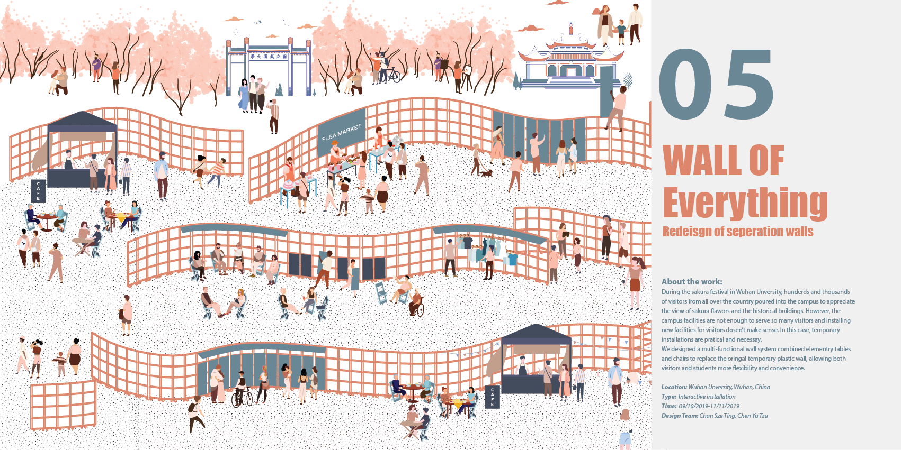

Sakura festival lasts only 15 to 20 days.
It is open for free to the public.
There are over 1,000 Sakura flowers inside Wuhan University.

 We came out with the idea of redesigning the existed separation wall. By picking one part of the whole walls next to No.1 entrance.
We came out with the idea of redesigning the existed separation wall. By picking one part of the whole walls next to No.1 entrance.
After several times brainstormings, we decide to focus on the current seperate walls to maximize efficiency. We then input various functions such as seating, eating, buying, guiding, entertaining and showing in order to improve visitors’ experience in Wuhan university.


BACKGROUND
SAKURA FESTIVAL IN WUHEN UNIVERSITY
Sakura are in full blossom in mid-march.Sakura festival lasts only 15 to 20 days.
It is open for free to the public.
There are over 1,000 Sakura flowers inside Wuhan University.
HIGH VISITOR FLOW
 From 14th to 29th of March this year,
there were a total of 180,000 people visiting to enjoy cherry blossoms.
wuhan citizens reached the highest, consisting of 104,000.
Generally, visitors stay at the university for about 4 to 5 hours
From 14th to 29th of March this year,
there were a total of 180,000 people visiting to enjoy cherry blossoms.
wuhan citizens reached the highest, consisting of 104,000.
Generally, visitors stay at the university for about 4 to 5 hours
CURRENT STRATEGIES
RESEARCH
SHADOWING
Shadowing, design researchers observe real-life situations of a research subject or a participant for a set period of time.We followed 4 typical groups: Tour group, girlfriends group, young couple and a family and wote down their routes, behaviors and time inside the school.

INTERVIEW
We have conducted interviews and surveys about 200 people. We have asked them questions about their visiting in Wuhan university.

DESIGN CONCEPT
We came out with the idea of redesigning the existed separation wall. By picking one part of the whole walls next to No.1 entrance.
After several times brainstormings, we decide to focus on the current seperate walls to maximize efficiency. We then input various functions such as seating, eating, buying, guiding, entertaining and showing in order to improve visitors’ experience in Wuhan university.
A WHOLE DAY USE
HOW TO USE
DETAILS